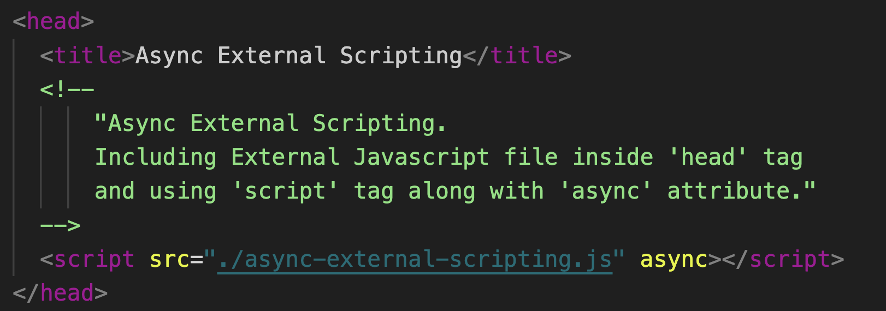

The async attribute is somewhat like defer. It also makes the script non-blocking. But it has important differences in the behavior.
The browser doesn’t block on async scripts (like defer).
Other scripts don’t wait for async scripts, and async scripts don’t wait for them.
DOMContentLoaded and async scripts don’t wait for each other: DOMContentLoaded may happen both before an async script or after an async script
